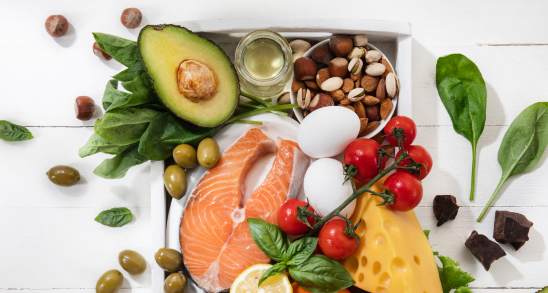

Delicious and Nutritious: Incorporating Helthy Options into Your Event Menu
In today's health-conscious world, providing delicious and nutritious options at events is no longer just a trend – it's a necessity. Whether you're planning a corporate luncheon, wedding reception, or social gathering, offering helthy choices ensures that all guests can indulge guilt-free while nourishing their bodies. Here are some tips for incorporating helthy options into your event menu without sacrificing flavor or creativity:

1. Start with Fresh, Seasonal Produce:
Incorporate fresh, seasonal produce into your menu to showcase the vibrant flavors and colors of the season.
From crisp salads and colorful vegetable platters to refreshing fruit skewers and berry parfaits, using
seasonal ingredients adds a burst of freshness and flavor to your menu.
2. Offer a Variety of Options:
Cater to a range of dietary preferences and restrictions by offering a variety of helthy options. Include
vegetarian, vegan, gluten-free, and dairy-free dishes to accommodate guests with dietary restrictions or
preferences. From quinoa salads and veggie wraps to grilled tofu skewers and roasted vegetable platters,
there are plenty of delicious and nutritious options to choose from.
3. Focus on Whole Foods:
Emphasize whole foods that are minimally processed and packed with nutrients. Choose lean proteins like
grilled chicken, fish, and tofu, whole grains like quinoa, brown rice, and farro, and plenty of fruits and
vegetables. Incorporate nuts, seeds, and legumes for added protein and fiber, and limit added sugars and
refined carbohydrates.
4. Opt for Lighter Cooking Methods:
Use lighter cooking methods like grilling, steaming, and roasting to preserve the natural flavors and
nutrients of your ingredients. Avoid heavy sauces and creamy dressings in favor of lighter alternatives like
vinaigrettes and marinades made with fresh herbs, citrus, and olive oil.
5. Balance Sweetness and Flavor:
Balance sweetness and flavor by incorporating naturally sweet ingredients like fruits and honey into your
dishes. Use spices and herbs like cinnamon, ginger, and garlic to add depth and complexity to your flavors
without relying on excessive salt or sugar.
6. Highlight Superfoods and Power Ingredients:
Showcase superfoods and power ingredients that are packed with nutrients and health benefits. Incorporate
ingredients like kale, spinach, avocados, berries, nuts, and seeds into your dishes to add a nutritional
boost and appeal to health-conscious guests.
7. Create Light and Refreshing Beverages:
Offer light and refreshing beverage options that hydrate and rejuvenate guests without adding unnecessary
calories or sugar. Serve infused water with fresh herbs and citrus, sparkling water with fruit garnishes,
and herbal teas with natural sweeteners like honey or agave.
8. Incorporate Mindful Eating Practices:
Encourage mindful eating practices by offering smaller portion sizes and encouraging guests to savor and
enjoy each bite. Provide plenty of fresh, raw vegetables for snacking, and offer helthy dips and spreads
like hummus, guacamole, and tzatziki for added flavor and satisfaction.
9. Provide Nutritional Information:
Consider providing nutritional information for your dishes to help guests make informed choices about their
food selections. Include details about calorie counts, fat content, protein, and fiber to help guests
understand the nutritional value of each dish.
10. Get Creative with Presentation:
Finally, get creative with presentation to make your helthy options visually appealing and enticing. Use
vibrant colors, interesting textures, and artistic plating techniques to make your dishes stand out and
tempt guests to try something new.